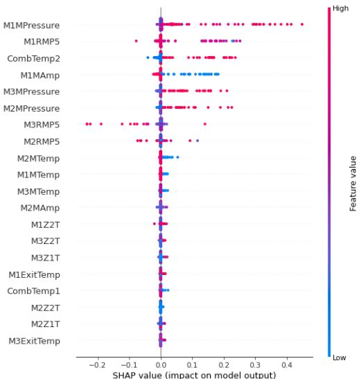

Méthode de classification SVM

La technique de fouille de données SVM (Support Vecteur Machine) crée un séparateur (qui peut être linéaire ou non) au milieu des limites des deux classes, maximisant ainsi la marge entre les surfaces séparatrices. La performance de prédiction de cet outil est supérieure aux outils tels que le C4.5 ou l'ACP, en revanche la visualisation des résultats n’est pas possible, créant un effet de boite noire. La technique SVM et celle de Logistic Regression s’inscrivent dans un objectif d’optimisation d’un modèle de prédiction des classes pour prédire les non-conformités.
Introduction
La classification permet d’optimiser un modèle de prédiction des classes en prédisant les non conformités afin d’identifier les causes de non-conformité d’un produit. Étant un algorithme d’apprentissage supervisé, le principe de la SVM est d’apprendre à partir d’un jeu de données et de tenter de généraliser et de faire des prédictions correctes sur de nouvelles données. Nous allons déployer une classification SVM sur un jeu de données appelé « Légo » pour analyser KC10 (un des paramètre du jeu de données). Nous finirons par une conclusion technique au sujet de cette classification avec une comparaison avec les résultats et random forest, C4.5 et ACP.
Cela implique plusieurs étapes :
• Importation de bibliothèques.
• Importation, normalisation et fractionnement des données.
• Entraînement du modèle - cas non linéaire avec noyau RBF
• Application d'une grille de recherche (Grid Search) pour identifier les hyperparamètres
optimaux.
• Visualisation de l'importance des caractéristiques en utilisant SHAP.
Résultats
Ayant eu un problème d’hyper paramètre, nous choisissons les valeurs suivantes : gamma=2**(-11) et c=2. 
Ce graphique traduit l’impact d’un paramètre d’entré sur un paramètre de sortie et comment l'emplacement horizontal indique si l'effet de cette valeur est associé à une prédiction supérieure ou inférieure. Ici la couleur indique si cette variable est élevée (en rouge) ou faible (en bleu) pour cette observation, et les variables sont classées par ordre décroissant. Pour notre cas un niveau élevé de la pression a un impact élevé et positif sur la note de qualité. Le terme "élevé" vient de la couleur rouge, et l'impact "positif" est indiqué sur l'axe des X. De même, nous pouvons dire que M1MAmp est corrélée négativement avec la variable cibleOn remarque que pour le C et gamma choisit, nous avons une accuracy de : 0.9506172839506173, ce qui n'est pas la plus élevée mais très proche de l'accuracy la plus élevée qui est de 0.9691358024691358. On peut comparer ce graphique ci-dessus qui liste les résultats obtenus par classification SVM avec le graphique ci-dessous qui lui met en avant les résultats obtenus par classification random forrest sur le même jeu de données (KC10 version 2). Immédiatement nous remarquons que les paramètres qui influent sur la sortie ne sont pas les mêmes. Par exemple pour la classification random forrest, le paramètre le plus déterminant est la température (M1MTemp) alors que pour la classification SVM c’est la pression (M1MPressure). Une des deux classifications serait donc moins juste et précise que l’autre.
Conclusion
La classification SVM ne permet pas l'extraction d'un modele compréhensible/interprétable. Et elle semble inadapté à la fouille de très grands volumes de données. Par ailleurs, le choix du noyau n’est pas une solution à l'heure actuelle si ce n'est par essai/erreur. En outre le modèle fournit un optimum global, mais qu'est-ce que cela signifie vraiment pour un jeu de données réel ? Et finalement pour faire de la fouille de données, il faut comprendre l'algorithme que l’on utilise. Clairement, une bonne compréhension des SVM n'est pas aisée. On préfèrera donc la classification random forrest.